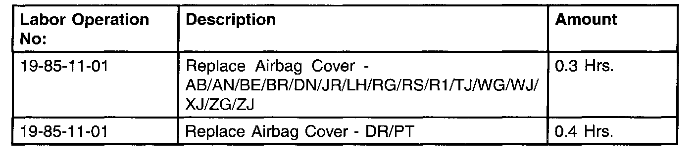
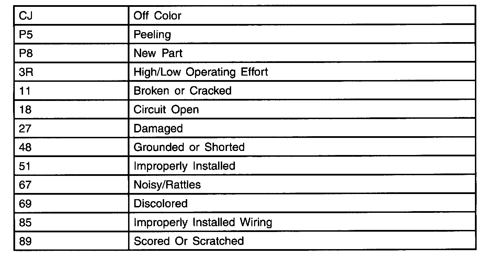

Driver Airbag - Trim Cover Service
NUMBER: 19-009-01GROUP: Steering
DATE: Oct. 26, 2001
SUBJECT:
Driver Airbag Trim Cover Service
MODELS:
1999 - 2002 (AB) Ram Van
1997 - 2002 (AN) Dakota
1997 - 2002 (BE/BR) Ram Truck
1998 - 2002 (DN) Durango
2002 (DR) Ram Truck
2001 - 2002 (JR) Sebring/Sebring Convertible/Stratus
1998 - 2002 (LH) LHS/300M/Concorde/Intrepid
2001 (PT) Chrysler PT Cruiser
2001 - 2002 (RG) Chrysler Voyager (International Markets)
2001 - 2002 (RS) Town & Country/Voyager/Caravan
2000 - 2001 (R1) Dakota (International Markets)
1997 - 2002 (TJ) Wrangler
2001 - 2002 (WG) Grand Cherokee (International Markets)
1999 - 2002 (WJ) Grand Cherokee
1997 - 2002 (XJ) Cherokee
1997 - 1998 (ZG) Grand Cherokee (International Markets)
1997 - 1998 (ZJ) Grand Cherokee
DISCUSSION:
Driver airbag trim covers/horn switches for the above vehicles are serviceable and as such, when applicable, must be used instead of replacing the airbag module assembly. Airbag module assemblies returned for trim cover and serviceable horn switch issues, are subject to charge back.
In most cases, the service manuals show driver airbag replacement procedures in the Restraints section of Group 8. Several MOPAR driver airbag cover packages include instruction sheets. Because of the long list of part numbers involved they are not listed here, please consult the MOPAR parts catalog for the correct part number(s).
WARNING:
ON VEHICLES EQUIPPED WITH AIRBAGS, DISABLE THE SUPPLEMENTAL RESTRAINT SYSTEM BEFORE ATTEMPTING ANY STEERING WHEEL, STEERING COLUMN, DRIVER AIRBAG, PASSENGER AIRBAG, SEAT BELT TENSIONER, SIDE CURTAIN AIRBAG, OR INSTRUMENT PANEL COMPONENT DIAGNOSIS OR SERVICE. DISCONNECT AND ISOLATE THE BATTERY NEGATIVE (GROUND) CABLE, THEN WAIT TWO MINUTES FOR THE SYSTEM CAPACITOR TO DISCHARGE BEFORE PERFORMING FURTHER DIAGNOSIS OR SERVICE. THIS IS THE ONLY SURE WAY TO DISABLE THE SUPPLEMENTAL RESTRAINT SYSTEM. FAILURE TO TAKE THE PROPER PRECAUTIONS COULD RESULT IN ACCIDENTAL AIRBAG DEPLOYMENT AND POSSIBLE PERSONAL INJURY.
WARNING:
THE HORN SWITCH IS INTEGRAL TO THE DRIVER AIRBAG UNIT. ONLY DAIMLERCHRYSLER-TRAINED AND AUTHORIZED DEALER SERVICE TECHNICIANS SHOULD PERFORM SERVICE OF THIS UNIT. FAILURE TO TAKE THE PROPER PRECAUTIONS OR TO FOLLOW THE PROPER PROCEDURES COULD RESULT IN ACCIDENTAL, INCOMPLETE, OR IMPROPER AIRBAG DEPLOYMENT AND POSSIBLE OCCUPANT INJURIES.
WARNING:
USE EXTREME CARE TO PREVENT ANY FOREIGN MATERIAL FROM ENTERING THE DRIVER AIRBAG, OR BECOMING ENTRAPPED BETWEEN THE DRIVER AIRBAG CUSHION AND THE DRIVER AIRBAG TRIM COVER. FAILURE TO OBSERVE THIS WARNING COULD RESULT IN OCCUPANT INJURIES UPON AIRBAG DEPLOYMENT.
WARNING:
THE DRIVER AIRBAG TRIM COVER MUST NEVER BE PAINTED. REPLACEMENT TRIM COVERS ARE SERVICED IN THE ORIGINAL COLORS. PAINT MAY CHANGE THE WAY IN WHICH THE MATERIAL OF THE TRIM COVER RESPONDS TO AN AIRBAG DEPLOYMENT. FAILURE TO OBSERVE THIS WARNING COULD RESULT IN OCCUPANT INJURIES UPON AIRBAG DEPLOYMENT.
The following can be used for all airbag trim cover replacements:

TIME ALLOWANCE:

FAILURE CODE:
POLICY:
Reimbursable within the provisions of the warranty.